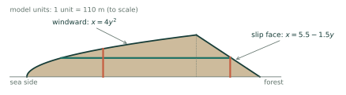
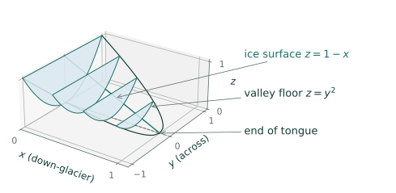
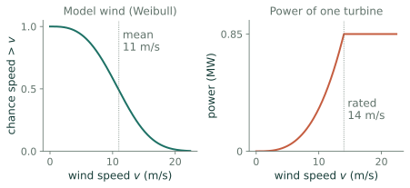
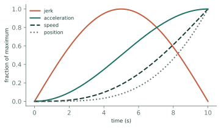

Read a region from its limits and reverse the order, including curved (parabolic, cubic, sine) boundaries
Split a region where a boundary formula changes, and combine a sum of integrals into one
Set up triple integrals over boxes and other solids, finding bounds the problem leaves unstated
Project a solid onto each coordinate plane and compare the resulting integrals
Write iterated limits as an inequality chain, and reorder triple integrals that cannot be done as written
\(\displaystyle\iint_D f\,dA=\int_a^b\!\!\int_{g_1(x)}^{g_2(x)}f\,dy\,dx=\int_c^d\!\!\int_{h_1(y)}^{h_2(y)}f\,dx\,dy\) for continuous \(f\), when \(D\) can be described both ways
\(\displaystyle\iiint_E f\,dV=\iint_D\Big(\int_{\text{floor}}^{\text{ceiling}}f\,dz\Big)dA\), where \(D\) is the shadow of \(E\) in the \(xy\)-plane
Centroid heights: \(\bar y=\dfrac1A\displaystyle\iint_D y\,dA\) for a region, \(\bar z=\dfrac1V\displaystyle\iiint_E z\,dV\) for a solid
Entering answers
Type numbers or formulas: fractions, decimals, pi, e, sqrt(...), sin(...), cos(...), exp(...), log(...). Use ^ for powers and radians for angles; separate vector components with commas.
Any equivalent form is accepted: 3/2, 1.5, and 6/4 are all the same answer, and so are (4/3)pi r^3 and 4 pi r^3/3.
Decimals must be correct to two decimal places (answers smaller than 0.1 need two significant digits). Exact forms such as 6pi sqrt(37) are always fine.
LaTeX such as \frac{1}{2}, \sqrt{2}, \pi, and \phi also works. A potential function may differ from ours by a constant. Units are shown beside each box.
Hints and solutions are built into the page, and nothing you type is sent anywhere: your answers and notes stay in this browser. This is an ungraded practice site.
The Dune du Pilat, on France’s Atlantic coast near Bordeaux, is the tallest sand dune in Europe: a wall of sand about 110 m high and 2.9 km long that creeps 1 to 5 m into the pine forest every year. The sea wind pushes sand up the dune’s gentle seaward side, the windward face. At the top, the crest, the sand avalanches down the steep forest side, called the slip face. A slice across the dune is a region between two curves. Where is the crest? How much sand does each meter of dune hold, and how high above the base is the center of that sand?
The cross-section is the same along the whole length of the dune.
The dune sits on a flat base at sea level.
One model unit is 110 m, both across and up.
The windward face is a parabola, and the slip face is a straight line.
3So the model is
Cross-section: the region bounded by the windward face \(x=4y^2\), the slip face \(x=5.5-1.5y\), and the base \(y=0\)
\(x\) = distance inland from the dune’s seaward toe, \(y\) = height above the base, both in model units

The model cross-section, to scale (1 unit = 110 m). The horizontal slice runs from the windward face to the slip face. The two vertical slices have different tops, one on each side of the crest.
First, on paper
Sketch the cross-section, and draw one horizontal slice (order \(dx\,dy\)) and one vertical slice (order \(dy\,dx\)).
After (a): Show the quadratic you solved for the crest, and explain which root you reject.
Check that the slip face slopes at about \(34^\circ\), the angle at which dry sand avalanches.
Explain why the order \(dy\,dx\) needs two integrals: say where to split and why.
Before (c): A geologist computes the first moment as \[\int_0^4\!\!\int_0^{\sqrt x/2}y\,dy\,dx+\int_4^{5.5}\!\!\int_0^{(5.5-x)/1.5}y\,dy\,dx.\] Sketch both pieces on one picture, and combine them into one integral in the order \(dx\,dy\).
Whiteboard kit ↓An image with the diagram, model, this task, and blank work areas. Add it to your group’s shared whiteboard as a background.
aFind the crest, where the windward face \(x=4y^2\) meets the slip face \(x=5.5-1.5y\). Enter \((x,y)\) in model units.
A step in the right direction
bFind the area of the cross-section, in square meters. (This is also the volume of sand, in cubic meters, per meter of dune length.)
A step in the right direction
cFind the height of the cross-section’s centroid above the base, in meters.
A step in the right direction
View full solution +
Follow the reasoning
Crest: setting \(4y^2=5.5-1.5y\) gives \(8y^2+3y-11=0\), which factors as \((y-1)(8y+11)=0\). So \(y=1\) or \(y=-11/8\). Reject the negative root: it lies below the ground, where the extended curves cross. The crest is \((4,1)\), which is 440 m inland and 110 m high.
Slip-face angle: the slip face drops 1 unit over 1.5 units, so it slopes at \(\tan^{-1}(2/3)\approx33.7^\circ\), close to the \(34^\circ\) at which dry sand avalanches.
Area in the order \(dx\,dy\): a horizontal slice at height \(y\) runs from the windward face \(x=4y^2\) to the slip face \(x=5.5-1.5y\) (test \(y=\tfrac12\): \(1<4.75\), so the order is right). So \[A=\int_0^1(5.5-1.5y-4y^2)\,dy=5.5-0.75-\tfrac43=\tfrac{41}{12}\] square units. One square unit is \(110^2\) m2, so \(A\approx41{,}342\) m2: about 41,342 m3 of sand per meter of dune.
Area in the order \(dy\,dx\): a vertical slice has top \(\min\!\big(\tfrac{\sqrt x}2,\tfrac{5.5-x}{1.5}\big)\), and the formula changes at the crest, \(x=4\). So we split there: \[A=\int_0^4\tfrac{\sqrt x}2\,dx+\int_4^{5.5}\tfrac{5.5-x}{1.5}\,dx=\tfrac83+\tfrac34=\tfrac{41}{12},\] the same area.
Combining the geologist’s integrals: the two pieces are the windward and forest-side parts of the same region, so their sum is one integral in the order \(dx\,dy\): \[\int_0^1\!\!\int_{4y^2}^{5.5-1.5y}y\,dx\,dy=\int_0^1(5.5y-1.5y^2-4y^3)\,dy=2.75-0.5-1=\tfrac54.\]
Centroid height: \(\bar y=\dfrac{5/4}{41/12}=\dfrac{15}{41}\approx0.366\) units, or about 40.2 m above the base. A triangle with the same three corners has its centroid at \(1/3\) of the height. The windward face bulges seaward of the straight line from toe to crest, which adds sand at mid-height and lifts the centroid a little.
Final answers
a.\(\left(4,\ 1\right)\)
b.\(\frac{124025}{3}\) m2
c.\(\frac{1650}{41}\) m
Discussion
The flat base at sea level is most to blame. The published height of about 110 m is the height of the crest, but the model fills everything below the crest with sand down to sea level; if the dune sits on higher ground, its sand is much thinner. The model also ignores how the dune tapers at its ends. To advance 1 m, the whole cross-section must move 1 m: about 41,000 m³ of sand per meter of dune per year in the model, or about 19,000 m³ if we scale to the published volume (55 million m³ ÷ 2,900 m).
Think it through
The model cross-section times the 2.9 km length gives about 120 million m³, more than twice the published 55 million m³. Which modeling choice is most to blame? And how much sand must cross each meter of the crest per year for the dune to advance 1 m?
Saved on this browser · Discussion prompt, not automatically graded
Problem 02Core
Monterey Bay: a tank, a tide pool, and a hot mussel
The Monterey Bay Aquarium pumps seawater from the bay into its exhibits, including the Open Sea tank. In the model, the tank’s water is warmer than a target temperature near the top and cooler near the floor. Just outside the aquarium’s walls, mussels live on rocks in the intertidal zone, the strip of shore that the tide covers and uncovers twice a day. NOAA publishes long-term average water levels for Monterey, such as mean tide level and mean high water. Is the tank’s water warmer or cooler than the target overall? How long is a mussel underwater at each high tide, and how much heat does it build up while the tide is out?
Building the model
1From the real world
Open Sea tank: 90 ft across, 52 ft front to back, 35 ft tall
Open Sea capacity: 1,200,000 US gallons
Monterey tidal datums above MLLW (mean lower low water): MHW (mean high water) 1.412 m, MTL (mean tide level) 0.873 m, MLW (mean low water) 0.333 m
The tank is a box \(B=[0,90]\times[0,52]\times[0,35]\) ft, with \(z\) measured up from the floor.
The water temperature \(T\) depends only on height: \(T-T_0=0.1(z-20)\) °C, where \(T_0\) is the target temperature.
The tide is a sine wave about MTL, with amplitude \(A=(\text{MHW}-\text{MLW})/2\approx0.54\) m and period 12.42 h.
A mussel is underwater whenever the water level is above it.
3So the model is
Tide height above MTL: \(A\sin\theta\), with phase \(\theta\) in radians (1 rad \(=12.42/(2\pi)\) h)
Scaled height \(y=(\text{height}-\text{MTL})/A\); the band from MTL to MHW is \(0\le y\le1\)
Average time underwater in that band, in radians of phase: \(2\displaystyle\int_0^1\!\!\int_{\arcsin y}^{\pi/2}d\theta\,dy\)
Mussel heat dose after \(\tau\) hours out of water: \(D=\displaystyle\int_0^\tau\!\!\int_0^t r(s)\,ds\,dt\) (°C·h), where \(r(s)\) is its warming rate (°C/h) \(s\) hours after the tide leaves it
Left: the tank model, warmer than \(T_0\) above \(z=20\) ft and cooler below. Right: one high tide in scaled units; a mussel at height \(y\) is underwater while the curve \(\sin\theta\) is above the dashed line.
First, on paper
After (a): Explain why \(\iiint_B1\,dV\) is the tank’s volume, and compare it with the published 1.2 million gallons (\(1\) ft\(^3\approx7.48\) gal).
Before (b): Predict the sign of \(\iiint_B(T-T_0)\,dV\) from where the water is warmer or cooler than \(T_0\), and explain why all six orders of integration give the same value.
Before (c): Sketch the region of the band-average integral in the \(\theta y\)-plane (a mussel at height \(y\) is underwater while \(\sin\theta>y\)), write it in the other order, and explain why the reversed integral is easier.
Prove, by changing the order of integration, that the heat dose is \(D=\int_0^\tau(\tau-s)\,r(s)\,ds\).
Explain the factor \(\tau-s\) in words, and check the identity when \(r\) is constant.
Whiteboard kit ↓An image with the diagram, model, this task, and blank work areas. Add it to your group’s shared whiteboard as a background.
aFind the volume \(\iiint_B1\,dV\) of the tank model \(B\), in cubic feet.
A step in the right direction
bFind \(\iiint_B (T-T_0)\,dV\) over the tank model \(B\), in °C·ft³.
A step in the right direction
cMussels are spread evenly in height between mean tide level and mean high water (\(0\le y\le1\)). Find their average time underwater during one high tide, in hours.
A step in the right direction
View full solution +
Follow the reasoning
Tank volume: integrating 1 over the box adds up every small volume \(dV\), so \(\iiint_B1\,dV=90\cdot52\cdot35=163{,}800\) ft3. That is about 1.225 million gallons, within about 2% of the published 1.2 million gallons; the real tank is not a perfect box.
Sign and order: \(T-T_0=0.1(z-20)\) is positive above \(z=20\) and negative below. The cool layer is 20 ft thick and the warm layer only 15 ft, so predict a negative total. On a box with a continuous integrand, all six orders give the same value (Fubini’s theorem).
Tank integral: the integrand separates, so \[\iiint_B(T-T_0)\,dV=90\cdot52\cdot0.1\int_0^{35}(z-20)\,dz=468(612.5-700)=-40{,}950\] °C·ft3. Dividing by the volume, the water averages 0.25 °C below the target.
Tide setup: the amplitude is \(A=(1.412-0.333)/2\approx0.54\) m, and \(0.873+0.54\approx1.412\), so \(y=1\) is MHW. The tide height is symmetric about \(\theta=\pi/2\), so a mussel at height \(y\) is underwater for \(2\int_{\arcsin y}^{\pi/2}d\theta\) radians per high tide.
Reversing the order: the region is \(0\le\theta\le\pi/2\), \(0\le y\le\sin\theta\), so \[2\int_0^1\!\!\int_{\arcsin y}^{\pi/2}d\theta\,dy=2\int_0^{\pi/2}\!\!\int_0^{\sin\theta}dy\,d\theta=2\int_0^{\pi/2}\sin\theta\,d\theta=2\text{ rad}.\] In the original order, the inner integral leaves \(\int\arcsin y\,dy\), which needs integration by parts.
In hours: 2 radians of phase is \(2\cdot12.42/(2\pi)\approx3.95\) h. On average, a mussel in the band is underwater for about 4 h of each 12.42 h tide cycle.
Heat dose: the region is \(0\le s\le t\le\tau\). For fixed \(s\), the variable \(t\) runs from \(s\) to \(\tau\), so \[D=\int_0^\tau\!\!\int_s^\tau r(s)\,dt\,ds=\int_0^\tau(\tau-s)\,r(s)\,ds.\] In words: warming at time \(s\) keeps the mussel warmer for the remaining \(\tau-s\) hours. For constant \(r\), both sides give \(r\tau^2/2\).
Final answers
a.\(163800\) ft3
b.\(-40950.0\)\(^\circ\)C\(\cdot\)ft3
c.\(\frac{12.42}{\pi}\) h
Discussion
Because the time underwater falls more and more steeply as \(y\) approaches 1. The time underwater per tide is \(\pi-2\arcsin y\) radians, and its derivative \(-2/\sqrt{1-y^2}\) has size 2 at mean tide level (\(y=0\)) but grows without bound as \(y\) approaches mean high water (\(y=1\)). So near the top of the band, each centimeter higher removes far more underwater time than the same step near mean tide level.
Think it through
Mussels high on the shore spend less time underwater and face longer, hotter low tides. Using the arcsin formula for time underwater, explain why a small step up the rock near mean high water costs much more underwater time than the same step near mean tide level.
Saved on this browser · Discussion prompt, not automatically graded
Climbers bound for Everest pitch their tents at Base Camp on the Khumbu Glacier, a river of ice about 17 km long that flows down from the mountain and melts away at 4,900 m. Below the Khumbu Icefall, a steep and broken stretch of the glacier, the ice forms a long tongue: the glacier’s lowest part, which rests in a U-shaped valley and thins to nothing at its end. How much ice is in the tongue? How much ground does it cover on a map, and how high above the bottom of the valley does its ice sit on average?
Ice: the solid between the parabolic valley floor \(z=y^2\) and the flat ice surface \(z=1-x\), with \(x\ge0\)
Real volume \(=LWH\times\)(scaled volume)

The model ice tongue in scaled coordinates, between the floor \(z=y^2\) and the surface \(z=1-x\). The shaded cross-sections are slices at fixed \(x\).
First, on paper
Find the bounds on \(x\) and \(y\) that the model leaves unstated: the ice lies between \(z=y^2\) and \(z=1-x\), with \(x\ge0\) and no other bounds given.
Sketch the shadow \(D\) of the ice on the \(xy\)-plane, and name the floor and the ceiling over it.
Sketch the shadows on the \(yz\)-plane and on the \(xz\)-plane, and state the inner limits over each.
Write the volume integral in all three ways, and say which projection gives the easiest integral.
After (a): Evaluate the scaled volume two ways, and confirm that the answers agree.
Whiteboard kit ↓An image with the diagram, model, this task, and blank work areas. Add it to your group’s shared whiteboard as a background.
aFind the volume of ice in the model tongue, in cubic kilometers.
A step in the right direction
bFind the area of the tongue’s footprint on the map (its shadow \(D\) in the \(xy\)-plane), in square kilometers.
A step in the right direction
cFind the average height of the ice above the lowest line of the valley floor (the height of the solid’s centroid), in meters.
A step in the right direction
View full solution +
Follow the reasoning
Hidden bounds and the \(xy\)-shadow: \(y^2\le z\le1-x\) forces \(y^2\le1-x\), so \(x\le1\) and \(|y|\le1\). The shadow is \(D=\{0\le x\le1,\ -\sqrt{1-x}\le y\le\sqrt{1-x}\}\), with floor \(z=y^2\) and ceiling \(z=1-x\), so \[V=\int_0^1\!\!\int_{-\sqrt{1-x}}^{\sqrt{1-x}}(1-x-y^2)\,dy\,dx=\int_0^1\tfrac43(1-x)^{3/2}\,dx=\tfrac8{15}.\]
Other projections: on the \(yz\)-plane the shadow is \(\{y^2\le z\le1\}\), and \(0\le x\le1-z\) over it, so \[V=\int_{-1}^1\!\!\int_{y^2}^1(1-z)\,dz\,dy=\int_{-1}^1\tfrac{(1-y^2)^2}2\,dy=\tfrac8{15}.\] On the \(xz\)-plane the shadow is the triangle \(0\le z\le1-x\), and \(|y|\le\sqrt z\) over it, so \(V=\int_0^1\!\int_0^{1-x}2\sqrt z\,dz\,dx\).
Comparison: the \(yz\) projection is easiest because it needs only polynomials. It agrees with the \(xy\) projection: both give \(\tfrac8{15}\).
Real size: \(V=LWH\cdot\tfrac8{15}=10(0.5)(0.3)\tfrac8{15}=0.8\) km3 of ice. Footprint: \(LW\int_0^12\sqrt{1-x}\,dx=5\cdot\tfrac43\approx6.67\) km2.
Average height: with \(c=\sqrt{1-x}\), \[\iiint z\,dV=\int_0^1\!\!\int_{-c}^{c}\tfrac{(1-x)^2-y^4}{2}\,dy\,dx=\int_0^1\tfrac45c^5\,dx=\tfrac45\cdot\tfrac27=\tfrac8{35}.\] So \(\bar z=\tfrac{8/35}{8/15}=\tfrac37\) of \(H\): the ice’s centroid sits about 129 m above the valley’s lowest line.
Final answers
a.\(0.8\) km3
b.\(6.66666666666667\) km2
c.\(\frac{900}{7}\) m
Discussion
The xy-projection matches it best. Satellites give the surface (the ceiling) over every map point, and radar gives the thickness (ceiling minus floor), which is exactly the inner integral over the shadow D. The yz-projection was easiest for this model, but it needs the down-glacier length of ice at each height, which neither instrument measures directly.
Think it through
Glaciologists measure thickness at a few points with radar and the surface everywhere from satellites. Which of your three projections matches that kind of data best, and why?
Saved on this browser · Discussion prompt, not automatically graded
In the desert east of Lake Turkana in northern Kenya, a low-level jet (a fast stream of wind near the ground) is funneled between two mountains. The Lake Turkana Wind Power project sits in its path: 365 turbines, the largest wind farm in sub-Saharan Africa when it was built. Below a turbine’s rated speed, its power grows like the cube of the wind speed, so a farm’s average output depends on the whole spread of wind speeds, not just the average speed. The average output divided by the rated output is the capacity factor. What is the farm’s capacity factor, and how much energy does it make in a year? Engineers write the answer as integrals, and not all of them can be done in the order written.
Wind speeds follow a Weibull distribution of shape 3: \(P(\text{speed}>v)=e^{-(v/c)^3}\), with \(c=12.3\) m/s so that the mean is 11 m/s.
Each turbine makes \(0.850\,(v/14)^3\) MW below its rated speed of 14 m/s, and 0.850 MW above it.
No turbine ever sits idle in light wind or shuts down in strong wind (no cut-in or cut-out speed).
3So the model is
Scaled speed \(x=v/14\): \(P(\text{scaled speed}>x)=e^{-ax^3}\) with \(a=(14/12.3)^3\approx1.47\), so the density is \(f(x)=3ax^2e^{-ax^3}\)
Integral 1 (below-rated share of the rated output): \(\displaystyle\int_0^1\!\!\int_{\sqrt[3]p}^{1}f(x)\,dx\,dp\)
Integral 2 (capacity factor, average output ÷ rated output): \(CF=6\displaystyle\int_0^1\!\!\int_z^1\!\!\int_y^1e^{-ax^3}\,dx\,dy\,dz\)

The wind model. Left: the chance that the wind speed exceeds \(v\), with the mean of 11 m/s marked. Right: the power curve of one turbine, which levels off at 0.850 MW above the rated speed of 14 m/s.
First, on paper
Before (a): Sketch the region of integral 1 in the \(xp\)-plane, then reverse the order (watch the cube-root boundary; no rectangle limits), and substitute.
Write the region of integral 2 as one chain \(0\le\square\le\square\le\square\le1\), and explain why it cannot be done in the order written.
Project that region onto the \(xy\)-plane, and name its floor and ceiling.
Before (b): Reorder integral 2 with \(x\) outermost, and describe the cross-section at fixed \(x\).
Write one more valid order, \(dy\,dz\,dx\).
Say which given integral you could have done as written.
Whiteboard kit ↓An image with the diagram, model, this task, and blank work areas. Add it to your group’s shared whiteboard as a background.
aEvaluate integral 1: the farm’s average output from winds below the rated speed, as a fraction of its rated output.
A step in the right direction
bReorder integral 2 with \(x\) outermost. Enter the integrand of the outer \(x\)-integral as a function of \(x\), without the factor 6 and with the number 1.47 for \(a\).
A step in the right direction
cUse the capacity factor from integral 2 to estimate the farm’s annual energy, in GWh.
A step in the right direction
View full solution +
Follow the reasoning
Integral 1: the limits \(0\le p\le1\), \(\sqrt[3]p\le x\le1\) describe the region below \(p=x^3\) for \(0\le x\le1\). Reversed, \[\int_0^1\!\!\int_0^{x^3}f(x)\,dp\,dx=\int_0^1x^3f(x)\,dx=\int_0^13ax^5e^{-ax^3}\,dx.\] With \(u=ax^3\) this is \[\frac1a\int_0^a ue^{-u}\,du=\frac{1-e^{-a}(1+a)}a\approx0.294.\]
Integral 2 as a chain: \(0\le z\le1\), \(z\le y\le1\), and \(y\le x\le1\) combine into \(0\le z\le y\le x\le1\). As written, the innermost \(\int_y^1e^{-ax^3}\,dx\) has no elementary antiderivative. Shadow on the \(xy\)-plane: \(0\le y\le x\le1\), with floor \(z=0\) and ceiling \(z=y\).
Reordering with \(x\) outermost: \[\int_0^1\!\!\int_0^x\!\!\int_0^y e^{-ax^3}\,dz\,dy\,dx,\] because the cross-section at fixed \(x\) is the triangle \(0\le z\le y\le x\), of area \(x^2/2\). Another valid order is \(\int_0^1\!\int_0^x\!\int_z^x e^{-ax^3}\,dy\,dz\,dx\).
Doable as written: integral 1 could also be done in its original order, since its inner integral is \(e^{-ap}-e^{-a}\). Integral 2 could not.
Capacity factor and energy: \(CF=6\int_0^1\frac{x^2}2e^{-ax^3}\,dx=\frac{1-e^{-a}}a\approx0.524\). So the farm makes about \(0.524\times310\text{ MW}\times8760\text{ h}\approx1{,}423\) GWh a year, close to the published estimate of 1,440 GWh.
Final answers
a.\(0.293934728971967\)
b.\(\frac{x^{2} e^{- 1.47 x^{3}}}{2}\)
c.\(1422.59479756934\) GWh
Discussion
Because power grows like the cube of the speed, and the cube is convex: averaging it over the spread of speeds gives more than the cube of the average (Jensen’s inequality), since windy hours add much more than calm hours take away. Even with the cube capped at the rated power, the model capacity factor is 52%, not 49%. More time near or above 14 m/s (a larger Weibull scale, or a narrower spread centered above the rated speed) would raise it further.
Think it through
At the average wind speed of 11 m/s, a turbine rated at 14 m/s would make (11/14)³ ≈ 49% of its rated power. Why is the model capacity factor larger, and which feature of the wind distribution would make it larger still?
Saved on this browser · Discussion prompt, not automatically graded
Problem 05Extension
Lifting ships at the Three Gorges
At China’s Three Gorges Dam on the Yangtze River, the world’s largest ship lift works like an elevator for boats. Ships of up to 3,000 tons float into a basin, a tank of water, which is then raised straight up 113 m. The real lift is balanced by counterweights, heavy masses that move down as the basin moves up, so its motors do only a small part of the lifting. The start must also be smooth: a sudden change in acceleration, called jerk, is felt as a jolt by passengers and cargo. How much water is in the basin? How much energy would the lift need without counterweights, and how far does the basin rise while it speeds up?
There are no counterweights (the real lift is counterbalanced).
Smooth start from rest: jerk \(j(u)=j_0\sin(\pi u/T)\) for \(0\le u\le T=10\) s, reaching full speed 0.2 m/s at time \(T\).
3So the model is
Position: \(x(T)=\displaystyle\int_0^T\!\!\int_0^t\!\!\int_0^s j(u)\,du\,ds\,dt\) (integrate jerk to get acceleration, then speed, then position)
Constants: \(g=9.81\) m/s²; water has a mass of 1 tonne per m³

The smooth start over the first 10 s: jerk, acceleration, speed, and position, each scaled to its maximum. Speed and position grow slowly at first.
First, on paper
Before (a): Describe the water in the basin as a box, and compute its volume as \(\iiint1\,dV\).
Write the region of the position integral \(x(T)\) as an inequality chain.
Reorder with \(u\) outermost, and show that \(x(T)=\int_0^T\frac{(T-u)^2}{2}\,j(u)\,du\).
Check this formula with a constant jerk \(j_0\).
Whiteboard kit ↓An image with the diagram, model, this task, and blank work areas. Add it to your group’s shared whiteboard as a background.
aFind the mass of water in the basin, in tonnes (1 m³ of water has a mass of 1 tonne).
A step in the right direction
bWithout counterweights, how much energy would it take to lift the full basin of water plus a 3,000 t ship through 113 m? Give megawatt-hours.
A step in the right direction
cWith the smooth-start jerk profile, how far has the basin risen when it reaches full speed at \(T=10\) s? Give meters.
A step in the right direction
View full solution +
Follow the reasoning
Basin volume: the water fills the box \([0,120]\times[0,18]\times[0,3.5]\) m, so \(\iiint1\,dV=120\cdot18\cdot3.5=7560\) m3, which is 7560 t of water.
Energy: \((7560+3000)\times10^3\text{ kg}\times9.81\times113\text{ m}\approx1.17\times10^{10}\) J, or about 3.25 MWh. Counterweights make the real lift nearly balanced, so its motors supply only a small part of this.
Reordering: the chain is \(0\le u\le s\le t\le T\). For fixed \(u\), the pair \((s,t)\) ranges over the triangle \(u\le s\le t\le T\), of area \((T-u)^2/2\), so \(x(T)=\int_0^T\frac{(T-u)^2}2j(u)\,du\). Check: a constant jerk \(j_0\) gives \(j_0T^3/6\) both ways.
Smooth start: with \(j(u)=j_0\sin(\pi u/T)\), the speed at \(T\) is \(j_0T^2/\pi=0.2\) m/s, so \(j_0=0.2\pi/100\) m/s3 for \(T=10\) s. Substituting \(w=u/T\) and then \(w\to1-w\) turns \(\int_0^1(1-w)^2\sin\pi w\,dw\) into \(\int_0^1w^2\sin\pi w\,dw=\frac{\pi^2-4}{\pi^3}\). So \[x(T)=j_0T^3\cdot\frac{\pi^2-4}{2\pi^3}\approx0.59\text{ m}:\] the basin rises only about 0.59 m of its 113 m while it speeds up.
Final answers
a.\(7560.0\) t
b.\(3.251688\) MWh
c.\(\frac{1.0 \left(-4 + \pi^{2}\right)}{\pi^{2}}\) m
Discussion
It would travel 1 m: constant acceleration a = 0.2/10 = 0.02 m/s² gives a distance of aT²/2 = 1 m. The smooth start accelerates gently at first, so it spends more of the 10 s moving slowly and covers only about 0.59 m.
Think it through
If the basin instead reached 0.2 m/s with constant acceleration over the same 10 s, how far would it travel? Why does the smooth start cover less distance?
Saved on this browser · Discussion prompt, not automatically graded
Field notes
Where the numbers come from
Each card lists the published values this week’s problems use, with a link to the original source and a CSV download. Everything else in a problem is a labeled assumption.
Published site figures
Syndicat Mixte de la Grande Dune du Pilat: visitor brochure (2023)
Official English brochure of the public body that manages the Grand Site de la Dune du Pilat. Figures are rounded; the height is given as about 110 m. The parabola-and-line cross-section in the problem is a model.
Station 9413450; epoch 1983–2001; benchmark sheet published October 12, 2011. Meters above MLLW. These are long-term reference levels, not successive tide readings or a forecast.
Wikipedia, accessed November 17, 2026, citing an ASTER study of supraglacial lakes in the Everest region. Only the length and elevations are published here; the tongue length, width, thickness, and shape in the problem are assumptions for a model, not survey values.
Lake Turkana Wind Power Project: Updated ESIA Summary (EIB, 2011)
European Investment Bank register, Updated Environmental and Social Impact Assessment Summary, November 2011. The wind farm was completed in 2018 with the same 365 V52 turbines. The Weibull wind model and the turbine power curve in the problem are assumptions.
Wikipedia, accessed November 17, 2026; the lift height is cited there to the China Three Gorges Project. The smooth-start motion in the problem is an assumption.